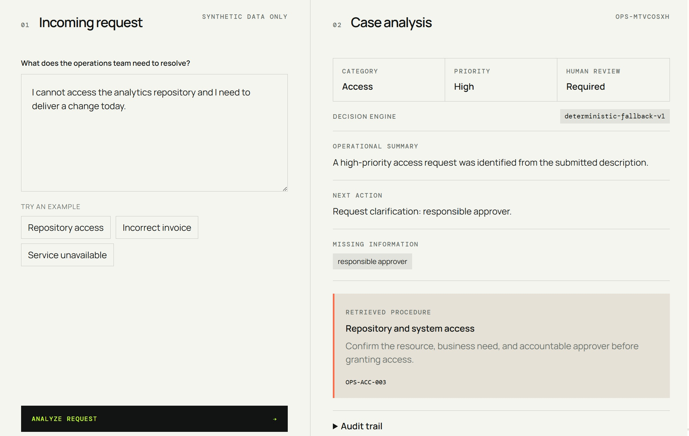

09
AI automation · 2026
AI Operations Desk
An auditable request-triage prototype that turns unstructured operational requests into actionable cases.
A deterministic policy validates input, retrieves a controlled procedure, preserves required human review, and records an audit trail. An optional n8n workflow adds Gemini classification only after structured-output validation.
- Role
- Design, development, and documentation
- Technologies
- JavaScript, n8n, Gemini, Docker, JSON Schema
- Status
- Public repository · static demo
